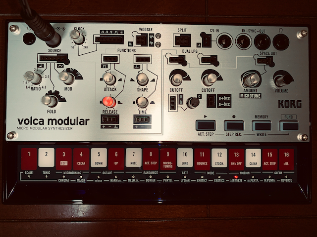
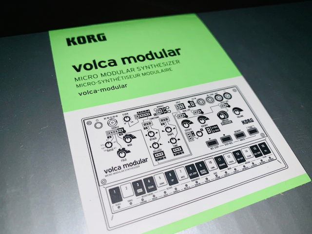
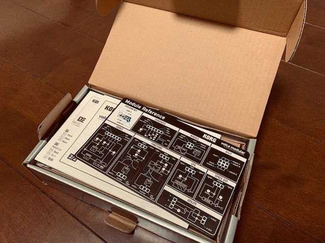
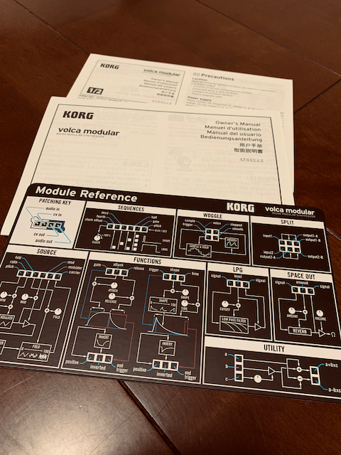
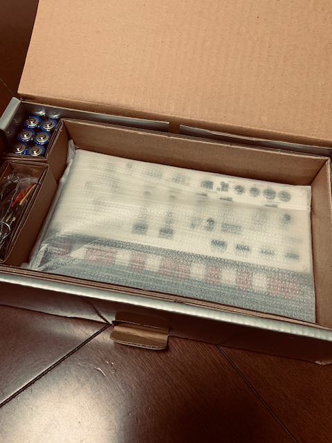
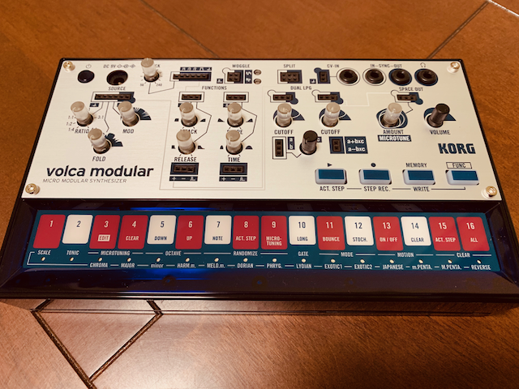

Korgのvolca modular買ったので軽くレビューしてみる
買っちゃった

volca modular、買っちゃったい。いやっほー_(:3」∠)_
volca modular？
volcaとは、KORGの生み出したシンセサイザーのシリーズでして、個人的にも大好きなシリーズです。コンパクトな筐体にハイエンドモデル顔負けの要素をこれでもかと積み込んで、FM音源を完全再現した上でUIをユーザーフレンドリーにして扱いやすくしたデジタルシンセサイザーだったり、かと思えばキック音に特化しまくった超絶ニッチだけどスゴく使えるキックジェネレーターだったり、王道のポリフォニックなアナログシンセサイザーなどなどを生み出してきたシリーズです。
個人的にも今までにkeys、bass、kick、sampleを購入してきましたが、今回新たにセミモジュラーシンセであるvolca modularを購入しました！
モジュラーシンセサイザーって何よ？
モジュラーシンセサイザーはシンセサイザーの各機能をモジュールとして分割して、それぞれをパッチケーブルで接続します。利用するモジュールも接続の順番もその接続先もすべて自分でカスタマイズできる、非常に自由度の高いシンセサイザーの形式です。「ユーロラック規格」という統一規格があって、この規格に沿った設計のモジュールであれば異なるメーカーのモジュール間でもパッチケーブルで接続して使用する事ができます。
逆に言えば自由度が高いゆえに難易度も高く、モジュール1個だけでは何もできず複数のモジュールが必要になりますが、そのモジュール1個あたりでウン万円したりします。また、モジュールが多くなればそれを格納するラックも大型の物が必要になり、異なるサイズのラックを用意しないといけないという難点もあります。ハマったらなかなか抜け出せない沼ですが、とっかかりにくいのでそもそも初心者向けとは言えません。
多分、めちゃくちゃハマったら車1台分とかの金額を投入することになると思います_(:3」∠)_
そんなモジュラーシンセサイザーを、そこそこの自由度を保ちつつ扱いやすくしたのがセミモジュラーシンセサイザーです。モジュラー構造を持ちつつもあらかじめ内部でパッチングされているため、一般的なシンセサイザーのようにも利用できます。もちろん、モジュラーシンセサイザーの醍醐味であるパッチングもできるようジャックがしっかりと用意され、外部でパッチングされると内部のパッチをバイパスするような仕組みになっています。
このvolca modularはセミモジュラーシンセサイザーです。そう、パッチングなしに楽しむこともできますが、パッチングすることでモジュラー然とした見た目とサウンドを得られるのです。しかも、一般的なモジュラーシンセサイザーのモジュール1個分の価格で！ここまでの話で、いかにこのシンセが画期的であるかがおわかりいただけると思います。実際安い（忍殺語
開封の儀

外箱から。volcaに限りませんが、KORGの箱のデザインってイイですよね。

箱を開封するとモジュールのリファレンスがまず目に入ります。多分、触り始めた当初はこれがないとにっちもさっちも行かないのでは・・・モジュラーシンセサイザーの知識がある人だったら問題ないのでしょうが、そういう人ってコレ買わないと思うしなー。

同梱されているのは、前述のリファレンスと取扱説明書などです。あと、ソフトシンセのプロダクトキーが記載された紙もありました・・・けど、使うかなぁこれ_(:3」∠)_

さて、書類などを出すと本体と電池、パッチケーブルなどが見えますね。

本体を取り出したところ。ところどころにある黒い四角い部分は、パッチケーブルを差し込むジャックです。
本体を真上から。白いラインは内部パッチングを表しています。1本もパッチケーブルを利用しない場合は、この白いラインで表された内部パッチングを通過して音が出力されます。
動作の様子など
とりあえず、まずはパッチングなしでプレイしてみました。volcaシリーズで培われたシーケンサーは、相変わらず直感的でおもしろいです。
Korgのvolca modular、買ってしまったのですが、パッチなしで既にこの出音でエグい(褒め言葉#volca pic.twitter.com/tkItOYT7Nv
— ysko (@unknown_strings) 2019年6月6日
もともとこの手のシンセは、いい意味で結構アバンギャルドな音なんですが、コイツもご多分に漏れずかなりキテます。いわゆるMOOGだったり往年のRolandやYamaha的なシンセサイザーとは異なる音で、好みは少し分かれるかもしれません。
コイツはいわゆる「ウエストコーストスタイル」なモジュラーシンセサイザーに分類されるのですが、前述のMOOGたちなどは「イーストコーストスタイル」なんですね。キーボードでの演奏を前提としているイーストコーストに比べると、ツマミでのパフォーマンスを前提にしているのか、とにかくツマミをグリグリやっているだけで時間が過ぎていきます。それぐらい楽しいです。ビキビキ言ってますぜ。
まとめ
良心的な値段とユーザーフレンドリーなUIに刺激的なサウンドを内包したアツいモジュラーシンセサイザー！です。
モジュラーシンセサイザーって、セミモジュラーシンセを含めてもそこそこの値段するので、2万円前後で買えるというのはもはや規格外と言ってしまっていいでしょう。それでいてモジュラーシンセの醍醐味をしっかり内包していて、サウンドもエキサイティングと、欠点らしい欠点がないです。
さあ、これでモジュラーシンセサイザーにハマって、沼に沈みましょう。沼は楽しいですよ。ほら、レンズ沼とかあるじゃないですか（ぐるぐる目